통신선로산업기사 (2004-03-07 기출문제)
1과목: 디지털전자회로
1. 트랜지스터의 콜렉터 누설전류가 주위온도의 변화로 15[㎂]에서 150[㎂]로 증가되었을 때 콜렉터 전류는 9[㎃]에서 9.5[㎃]로 변하였다. 이 트랜지스터의 안정계수 S는 약 얼마인가?
- 0.037
- 3.7
- 27
- 270
(정답률: 알수없음)

2. 다음 논리식을 간단히 하면?
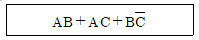
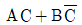
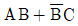
- AC+B
- AB+C
(정답률: 알수없음)
3. 하틀레이 발진기에서 궤환요소는?
- 용량
- 저항
- 코일
- 능동소자
(정답률: 알수없음)
4. 반송파전압 ec = Ec cos(wct + θ)를 신호전압 es = Es cos wst 로 진폭변조시 피변조파의 상측파대의 진폭은? (단, ma: 변조도)
- wc + ws
- ma·Ec/2
- wc - ws
- ma·Ec
(정답률: 알수없음)
5. 다음 회로중 미분 회로는 어느 것인가?
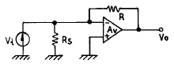
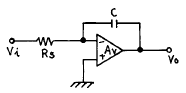
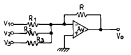
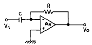
(정답률: 알수없음)
6. 다음 연산증폭회로에서 출력전압 e0를 구하는 식은? (단, R1 = R3, R2 = R4 이다.)
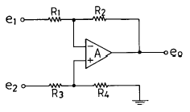
- e0 = e2-e1
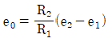
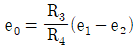
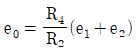
(정답률: 알수없음)
7. 다음은 반가산기(Half Adder)의 블록도이다. 출력단자 S(sum) 및 C(carry)에 나타나는 논리식은?
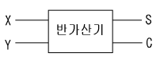
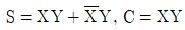
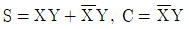
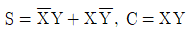
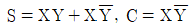
(정답률: 알수없음)
8. 트랜지스터를 증폭작용에 이용할 경우의 동작상태는?
- 포화상태
- 활성상태
- 차단상태
- 역활성상태
(정답률: 알수없음)
9. 동조형 공진결합 증폭기에서 대역폭 B를 넓게 하는 방법은?
- 공진회로의 용량을 증가시킨다.
- 공진회로의 Q를 낮게 한다.
- 공진회로의 저항을 감소시킨다.
- 공진회로의 인덕턴스를 증가시킨다.
(정답률: 알수없음)
10. 다음 회로의 논리 출력식으로 옳은 것은?
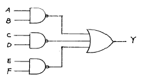
- Y = AB·CD·EF
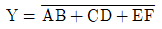
- Y = AB + CD + EF
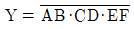
(정답률: 알수없음)
11. 10진수 25를 2진수로 옳게 나타낸 것은?
- 10001
- 11001
- 10101
- 11000
(정답률: 알수없음)
12. 전파정류회로의 최대효율은 약 몇[%]인가?
- 20
- 40
- 81
- 92
(정답률: 알수없음)
13. Flip-Flop 과 관계가 없는 것은?
- RAM
- Decoder
- Counter
- Register
(정답률: 알수없음)
14. 다음 논리식 중 틀린 것은?
- A+0 = A
- A·0 = 0
- A·1 = 1
- A+1 = 1
(정답률: 알수없음)
15. 다알링톤(Darlington)회로의 설명으로 틀리는 것은?
- 전압 이득이 작다.
- 전류 이득이 크다.
- 입력저항이 작다.
- 출력저항이 작다.
(정답률: 알수없음)
16. 2진 비교기의 구성요소를 맞게 설명한 것은?
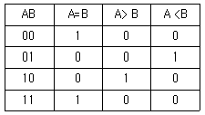
- 인버터 2개, NOR 게이트 2개, NAND 게이트 1개
- 인버터 2개, AND 게이트 1개, NOR 게이트 2개
- 인버터 2개, AND 게이트 2개, X-NOR 게이트 1개
- 인버터 2개, NAND 게이트 2개, X-OR 게이트 1개
(정답률: 알수없음)
17. 가청주파수 증폭기에서 부궤환 회로를 사용하는 목적을 설명한 것 중 적합하지 않은 것은?
- 왜곡(distortion)을 개선하기 위하여
- 잡음을 감소시키기 위하여
- 이득을 크게 하기 위하여
- 주파수특성을 좋게 하기 위하여
(정답률: 알수없음)
18. 다음과 같은 논리 다이아그램을 논리식으로 표시하면?
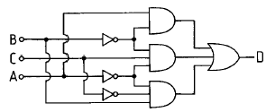
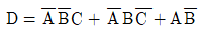
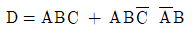
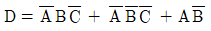
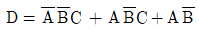
(정답률: 알수없음)
19. 다음과 같은 회로에 정현파 입력 신호를 가했을 때 출력파형은? (단, 다이오우드 순방향 저항 Rf = 0)
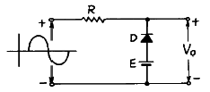
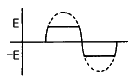
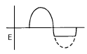
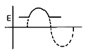
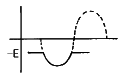
(정답률: 알수없음)
20. 다음 중 Schmitt trigger 회로의 특성으로 옳은 것은?
- 이득을 향상시킬 수 있다.
- 계단파 발진기로 주로 사용한다.
- 삼각파 입력으로 정현파 출력이 된다.
- 회로구성은 쌍안정 멀티바이브레이터와 유사하다.
(정답률: 알수없음)
2과목: 유선통신기기
21. 다음 중 비동기 전송 모드(ATM)에서 페이로드(payload)의 크기는 얼마인가?
- 5 Bytes
- 48 Bytes
- 53 Bytes
- 64 Bytes
(정답률: 알수없음)
22. PCM 24CH 방식에서 1 프레임에 수용되는 pulse의 수는 모두 몇개가 들어 갈 수 있는가?
- 192개
- 193개
- 191개
- 190개
(정답률: 알수없음)
23. 직류전류계법에 의한 자동전화기용 계전기의 접촉률 시험에서 접점이 붙었을 때에는 100[㎃]의 전류가 흐르고, 떨어졌을 때에는 16[㎃]의 전류가 흘렀다. 이 계전기의 접촉률은?
- 16[%]
- 32[%]
- 84[%]
- 100[%]
(정답률: 알수없음)
24. 시내전화의 서비스를 나타내는 척도는?
- 라인 화인더의 호손률
- 교환기의 설계 호손률
- 통화 완료률
- 중계선 화중률
(정답률: 알수없음)
25. 전화 트래픽 관련 용어 설명중 잘못된 설명은?
- 호(Call) : 전화의 이용자가 통신을 목적으로 통신회선을 사용하는 사상(Event)
- 보류시간(Holding Time) : 호가 통신회선을 점유하는 시간
- 최번시 : 1일중 호가 가장 많이 발생하는 시간
- 최번시 호수(BHCA) : 가입자에 의해 시도된 총 통화량
(정답률: 알수없음)
26. 계전기의 동작전류의 종류에 따라 계전기를 분류할 경우 관계 없는 것은?
- 압전기용
- 직류용
- 교류용
- 맥류용
(정답률: 알수없음)
27. DTMF방식 전화기의 다이얼은 어떤 형태의 수열신호를 사용하는가?
- D.C 임펄스
- 두개 주파수원의 혼합된 신호
- 세개 주파수원의 혼합된 신호
- D.C 임펄스를 A.C 신호로 변환한 신호
(정답률: 알수없음)
28. 다음 중 TDX-10의 CCS 서브시스팀의 기능은?
- 과금 및 통계기능
- 녹음안내 기능
- 망동기 기능
- 공간스위치 기능
(정답률: 알수없음)
29. 교환 소프트웨어의 개발시간과 경비를 감축하고 소프트웨어 질을 향상시킬 프로그램을 코딩을 위해 ITU-T에서 권고한 고급 프로그래밍 언어는 어떤 것인가?
- SDL
- MML
- MSC
- CHILL
(정답률: 알수없음)
30. raffic에 있어서 단위시간은 몇 시간을 표시하는가?
- 100시간
- 1시간
- 24시간
- 3600시간
(정답률: 알수없음)
31. 전화기의 수화기 원리에서 영구자석의 자속밀도(Bo)와 음성 전류에 의한 자속밀도(b) 사이에 좋은 수화감도를 유지하기 위한 조건으로 알맞는 것은?
- Bo = b 의 조건
- sin Bo = cos b의 조건
- π Bo = b2의 조건
- 2Bob > b2의 조건
(정답률: 알수없음)
32. 탄소 송화기는 송화기 원리상 어디에 속하는가?
- 자석식
- 가변 저항식
- 축전기식
- 압전형
(정답률: 알수없음)
33. 한 회선의 신호레벨이 -15[dBm]일 때 이 신호를 16개 회선에 같은 크기로 분할한 회선의 신호 레벨을 측정하면 얼마인가?
- -9[dBm]
- -13[dBm]
- -16[dBm]
- -27[dBm]
(정답률: 알수없음)
34. 전자교환기의 기능을 나타내는 항목 중에서 중앙제어장치가 1 시간 동안에 처리할 수 있는 최대 호수를 호 처리 용량이라고 한다. 다음의 단위 중에서 호 처리 용량을 나타내는 단위는?
- BHCA
- Erl
- HCS
- bps
(정답률: 알수없음)
35. 다음 중 같은 광원을 사용하였다고 가정하였을 때 분산이 가장 큰 광섬유는?
- step index SMF
- step index MMF
- grad index MMF
- 분산천이 SMF
(정답률: 알수없음)
36. 진폭 편이 변조에 대한 설명중 관계가 적은 것은?
- 전송로의 잡음이나 레벨변동에 약한 결점이 있어 수 신부에 보정회로가 필요하다.
- 복조 방법은 주파수 변별기를 사용해야하고, 회로가 다른 방식에 비해 간단하여 많이 사용한다.
- 설계가 비교적 간단하고 주파수 변동에 대하여 강한이점이 있다.
- 반송파 단속시 레벨의 편차가 충분히 커야 한다.
(정답률: 알수없음)
37. 팩스밀리의 수신기록방식에는 여러가지 방법이 있다. 다음에서 팩스밀리의 기록방식이 아닌 것은?
- 잉크제트
- 방전파괴기록
- 감열기록
- 알파모자이크
(정답률: 알수없음)
38. 통신수단인 광케이블의 특징과 거리가 먼 것은?
- 전송 손실율이 낮다.
- 전자파 장애에 민감하다.
- 인간의 머리카락보다 직경이 가늘고 가볍다.
- 인장력이 높다.
(정답률: 알수없음)
39. 어느 파형을 측정한바 기본파 진폭이 447.2[mV], 제2고조파 진폭 20[mV], 제3고조파 진폭 10[mV]였다면 왜율은?
- 약 1.2[%]
- 약 3[%]
- 약 5[%]
- 약 6.7[%]
(정답률: 알수없음)
40. 별도의 신호 전용회선을 통하여 디지털신호를 양방향으로 송·수신 하는 디지털망에 적합한 신호방식은?
- R2MFC 신호
- NO.7 신호
- Loop Decadic 신호
- DTMFC 신호
(정답률: 알수없음)
3과목: 전송선로개론
41. 광섬유 내부의 굴절률을 가장 높게 하고 외부로 갈수록 연속적으로 점차 굴절률이 낮아지도록 만든 광섬유는?
- 집속형 광섬유
- 언덕형(GI) 광섬유
- 다중형 광섬유
- 계단형(SI) 광섬유
(정답률: 알수없음)
42. 다음은 통신구의 장점에 대해서 나열하였다. 잘못된 것은?
- 초기 건설비용이 작게든다.
- 외부의 악영향으로부터 안전하다.
- 케이블 신규포설작업이 편리하다.
- 기설 케이블 유지보수가 용이하다.
(정답률: 알수없음)
43. 선로고장측정에 이용되는 L3 시험기는 어떤 원리를 이용한 것인가?
- 브리지원리
- 직선검파원리
- 펄스반사원리
- 저항감쇠원리
(정답률: 알수없음)
44. 케이블 심선구조에서 성형쿼드(star quad)란?
- 심선 4개를 1조로 하여 꼰 구조상태이다.
- 심선 3개를 1조로 하여 2중으로 꼰 구조상태이다.
- 단쌍(one pair)을 2조로 하여 꼰 구조상태이다.
- 2개의 심선을 꼬아 놓은 구조상태이다.
(정답률: 알수없음)
45. 광중계기 중에서 자동이득 조정회로(AGC)의 기능이 아닌 것은?
- 수광전력의 변동 보상
- 온도변화의 이득 보상
- 고주파 잡음특성 보상
- 증폭기의 이득변동 보상
(정답률: 알수없음)
46. 광섬유에서 빛이 통과하는 주통로는?
- 코아(core)
- 크래드(clad)
- 코아(core)와 크래드(clad)
- 코아(core)와 크래드(clade) 경계면
(정답률: 알수없음)
47. 통신용 케이블의 심선 집합 구성으로 옳은 것은?
- 쌍 → 그룹 → 유니트
- 쌍 → 유니트 → 그룹
- 그룹 → 쌍 → 유니트
- 유니트 → 그룹 → 쌍
(정답률: 알수없음)
48. 다음 중 평형 케이블에 전송할 수 있는 주파수의 상한은 주로 무엇 때문에 제한을 받는가?
- 잡음
- 비직선 일그러짐
- 레벨 변동
- 누화
(정답률: 알수없음)
49. 전송신호의 전력이 1/10 의 감쇠를 주는 선로와 1/1000의 감쇠를 주는 선로를 접속할 때 전체의 감쇠량은?
- -50[dB]
- -40[dB]
- -30[dB]
- -20[dB]
(정답률: 알수없음)
50. 옥외 전화선을 가입자 댁내로 인입할 때 주로 사용되는 것은?
- 주단자함(MDF)
- 단자함
- 배선함
- 접속함
(정답률: 알수없음)
51. 다음은 전송선로의 분포정수에 대한 설명으로 잘못 설명된 것은?
- R = G = 0인 선로를 무손실선로라 한다.
- RC = LG인 선로를 무왜곡선로라 한다.
- 무왜곡선로에서 특성임피던스는 일정하다.
- 무왜곡선로에서 위상정수는 주파수에 반비례한다.
(정답률: 알수없음)
52. 스크린(screen)케이블에 대한 설명 중에서 틀린 것은?
- 심선도체는 종이 테이프로 절연하였다.
- 케이블 중간에 스크린 금속체로 분리되어 있다.
- 심선절연체는 칼라코드화 되어 있다.
- 심선에는 0.65mm 연동선을 사용하였다.
(정답률: 알수없음)
53. 표준직경 50[㎛]의 광섬유 케이블에서 광심선 코어가 다음 그림과 같이 찌그러져 최대 직경 amax가 51.7[㎛]이고 최소직경 amin이 48.8[㎛]이라면 이 광섬유 코어의 비원율 e는 몇% 인가?
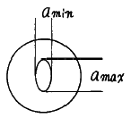
- e = 9.4
- e = 7.2
- e = 5.8
- e = 3.3
(정답률: 알수없음)
54. 전송선로에서의 특성 임피던스를 특히 반송 주파수 이상에서는 파동 임피던스라고 하는데 다음 중 어느 것인가?
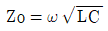
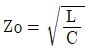
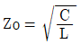
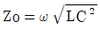
(정답률: 알수없음)
55. 음성 주파수대와 반송 주파수대를 분리하는 것은?
- 선로 여파기
- 변복 여파기
- 방향 여파기
- 복합 여파기
(정답률: 알수없음)
56. 누화의 경감대책에 속하지 않는 것은?
- 압신기 사용
- 송단 전류의 증가
- 시험접속
- 교차
(정답률: 알수없음)
57. 광섬유를 영구 접속(Splicing)할 때 융착 접속방법을 사용한다. 융착접속시 작업순서로 알맞는 것은?
- 광섬유정렬 - 본방전 - 예비방전 - 접속점의 보강
- 광섬유정렬 - 접속점의 보강 - 예비방전 - 본방전
- 광섬유정렬 - 예비방전 - 본방전 - 접속점의 보강
- 예비방전 - 접속점의 보강 - 본방전 - 광섬유정렬
(정답률: 알수없음)
58. 다음 중 디지틀 전송방식이 아닌 것은?
- PCM방식
- FDM방식
- TDM방식
- OTDM방식
(정답률: 알수없음)
59. 다음 동축 케이블에 관한 설명중 옳지 않은 것은?
- 동축 케이블의 최적비는 3.6이다.
- 감쇠정수는 주파수의 평방근에 반비례한다.
- 전자 및 정전결합에 의한 누화는 생기지 않는다.
- 특성 임피던스는 주파수에 무관하다.
(정답률: 알수없음)
60. 통신용 동케이블선로에서 평상시 전력유도 경감대책으로 서 적당하지 않은 것은?
- 양선로 간격을 가능한 넓히고 선로가 상호 교차할 경우는 이를 직각으로 한다.
- 금속차폐층이 있는 케이블을 사용한다.
- 차폐선, 유도차폐선 등을 사용한다.
- 피뢰기를 설치한다.
(정답률: 알수없음)
4과목: 전자계산기일반 및 선로설비기준
61. 다음의 오퍼랜드 어드레스 방식 중에서 기억장치를 두번 읽어야 원하는 데이터를 얻을 수 있는 방식?
- 간접 어드레스 지정방식(indirect addressing mode)
- 직접 어드레스 지정방식(direct addressing mode)
- 상대 어드레스 지정방식(relative addressing mode)
- 페이지 어드레스 방식(page addressing mode)
(정답률: 알수없음)
62. 정보통신공사업을 영위하고자 하는 자는 어떤 절차를 거쳐야 하는가?
- 정보통신부장관의 허가를 받아야 한다.
- 정보통신부장관에게 등록하여야 한다.
- 한국정보통신공사협회장에게 신고하여야 한다.
- 통신위원회의 승인을 얻어야 한다.
(정답률: 알수없음)
63. 마이크로 컴퓨터에서 각 구성 요소간의 데이터 전송에 사용되는 공통의 전송로는?
- BUS
- CHANNEL
- LINE
- INTERFACE
(정답률: 알수없음)
64. 서브루틴의 호출에 이용되는 자료구조는?
- 배열(array)
- 스택(stack)
- 레코드(record)
- 큐(queue)
(정답률: 알수없음)
65. 통신공동구의 설치기준으로 맞지 않는 것은?
- 차도인 경우 지면에서 관로상단까지의 거리는 1.0m 이상 확보하여야 함.
- 관로는 가스관등 다른 매설물과 50cm이상 떨어져 매설하여야 함.
- 보도 및 자전거도로는 1미터이상 매설해야함
- 관로상단과 지면사이는 관로보호용 경고테이프를 관로매설경로에 따라 매설하여야 함.
(정답률: 알수없음)
66. 디지털 컴퓨터에 대한 설명이 아닌 것은?
- 모든 데이터들을 이산적인 숫자 형태로 표현된다.
- 사칙 연산 및 논리연산을 수행한다.
- 모든 동작은 프로그램에 의하여 수행된다.
- 회로는 미분, 적분, 가산회로 및 릴레이로 구성된다.
(정답률: 알수없음)
67. 다음 중 Unary 연산이 아닌 것은?
- move
- logical shift
- complement
- NAND
(정답률: 알수없음)
68. 2진수 1001의 1의 보수에 해당하는 것은?
- 0001
- 0110
- 0111
- 0101
(정답률: 알수없음)
69. 다음 중 가장 저급 수준의 프로그램 언어는?
- Assembly 어
- FORTRAN
- COBOL
- C
(정답률: 알수없음)
70. 전기통신 기자재를 제조 또는 판매를 하거나 수입하고 자하는 자의 이행사항은?
- 정보통신부장관의 형식검정
- 산업자원부장관의 형식승인
- 정보통신부장관의 형식승인
- 산업자원부장관의 형식검정
(정답률: 알수없음)
71. 음량손실의 객관적 척도로 이용하는 음량정격의 단위는?
- [dB]
- [dBm]
- [Ω]
- [mm]
(정답률: 알수없음)
72. 64비트 마이크로프로세서에서 데이터 버스(data bus)는 몇 개의 선으로 구성되어 있는가?
- 8개
- 16개
- 64개
- 128개
(정답률: 알수없음)
73. 다음 중 어느 것에서 직접 연산이 수행되는가?
- 누산기
- 레지스터
- 감산기
- 가산기
(정답률: 알수없음)
74. 기간통신사업자가 통신선로를 설치하기 위하여 타인의 토지사용이 필요하나 그 토지의 소유자 또는 점유자와 토지사용 협의가 성립되지 않은 경우 조치는?
- 정보통신공사업법이 정하는 바에 따라 사용한다.
- 공익사업을 위한 토지등의 취득 및 보상에 관한 법률이 정하는 바에 의하여 사용할 수 있다.
- 협의가 성립되지 않았으므로 절대 사용할 수 없다.
- 사법처리 후 강제로 사용할 수 있다.
(정답률: 알수없음)
75. 사용자(end user)가 작성한 프로그램을 무엇이라 하는가?
- 원시 프로그램(source program)
- 컴파일러(compiler)
- 언어 번역 프로그램(language translator)
- 목적 프로그램(object program)
(정답률: 알수없음)
76. 전기통신의 기술 지도 대상자에 대한 기술지도 방법으로 옳지 않은 것은?
- 전기통신 기자재 제조법에 대한 지도
- 기술정보의 제공
- 기술훈련 및 해외기술협력의 지원
- 전기통신기자재의 품질 보증에 관한 지도
(정답률: 알수없음)
77. 수저선로의 보호구역내에서 할 수 있는 행위는?
- 정보통신부장관의 승인을 얻은 해안보전 시설공사
- 수산물 채취
- 선박의 계류
- 어로 작업
(정답률: 알수없음)
78. 전기통신기본법에서 정하는 전기통신에 대한 정의는?
- 유선·무선·광선 및 기타의 전자적 방식에 의한 정보의 송수신
- 전기통신을 하기위한 설비의 통신
- 정보통신을 하기위한 설비의 통신
- 전기통신사업의 관장을 위한 송·수신
(정답률: 알수없음)
79. 기간통신사업자의 손실보상 범위에 포함되지 않는 것은?
- 토지등 일시사용
- 토지등에의 출입
- 장애물 등의 제거요구
- 무선국 개설시 교통기관 이용
(정답률: 알수없음)
80. 다음 용어의 내용이 잘못된 것은?
- 강전류전선 : 300[V] 이상의 전력을 송·배전하는 전선
- 음성주파수 : 20[Hz] 이상 2만[Hz] 이하의 전자파
- 명음 : 전기통신설비의 회로간에 전자적, 음향적 결합에 의하여 스스로 발생하는 발진음
- 국선 : 통신사업자의 교환설비로부터 이용자 통신설비의 최초단자에 이르기까지의 사이에 구성되는 회선
(정답률: 알수없음)
S = (ΔIc / Ic) / (ΔVbe / Vbe)
여기서 ΔIc는 콜렉터 누설전류의 변화량, Ic는 콜렉터 전류, ΔVbe는 베이스-에미터 전압의 변화량, Vbe는 베이스-에미터 전압을 의미한다.
문제에서 ΔIc는 150 - 15 = 135[㎂], Ic는 (9 + 9.5) / 2 = 9.25[㎃], ΔVbe는 알 수 없다. 하지만 안정계수 S는 온도에 민감한 값이므로, 주어진 정보로부터 대략적인 값을 추정할 수 있다.
온도가 증가하면 베이스-에미터 전압이 감소하므로, ΔVbe는 음수일 것이다. 따라서 S는 양수가 될 것이다. 또한, ΔIc가 Ic에 비해 상대적으로 크므로, S는 작은 값일 것이다.
보기에서 유일하게 작은 값인 0.037을 제외하면, 모두 큰 값이다. 따라서 정답은 3.7이다.